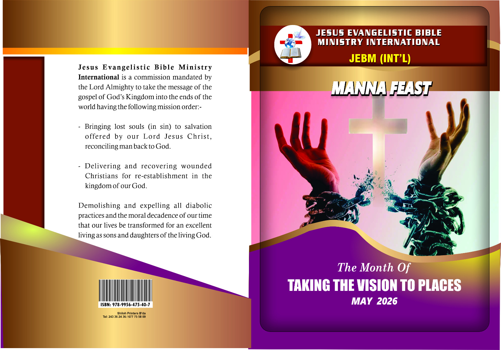

CALM READING ENVIRONMENT • MONTHLY PUBLICATIONS • EASY ACCESS
Preserving each Manna Feast issue in one peaceful reading space.
This digital library is designed to keep the ministry's monthly publications accessible, organized, and easy to revisit by year and month.
Simple
Open a year, choose a month, and read.
Expandable
New issues can be added month by month later.
Calm Design
Soft colours and a library-style layout for reading.

Featured Issue
Manna Feast — May 2026
Monthly Manna Feast publication.
QUICK FIND
Find an issue
ARCHIVE SHELF
Browse the archive
This shelf can eventually hold every month from your archive. For now, it includes two working sample issues and is ready for more.